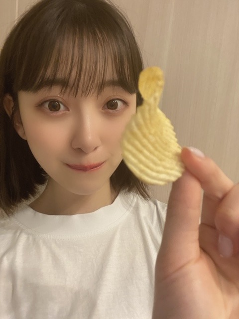
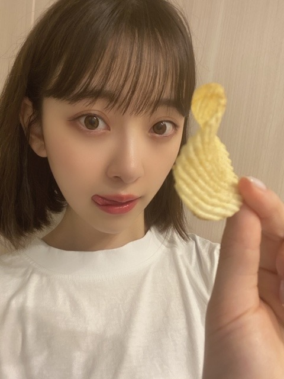

2020/0518Mon@horimiona2nd タイトル決まらないのでしばらくこれにします
こんにちは☺︎


表情の高低差に耳キーンなりましたか？( ຶ- ຶ)
今日は週刊プレイボーイさんの発売日です!
表紙をやらせていただいている
FRIDAYさんと のぎたび本の
感想もお待ちしていますね♡


5/20(水) ANN生放送
5/23(土) アップトゥボーイ 表紙
5/26(火) FLASH
5/27(水) 2nd写真集発売日✨
レコメン! 生放送
6/3(水) 堀工事中DVD
感想またお聞かせください☺︎
こうしてブログや
写真集のTwitter、Instagram
755、モバメで皆さんと
繋がっていることを日々実感しているので
なんか寂しいけど寂しくないです ?
感想やコメントもちゃんと見てますよ!
思っている以上に声は届くものなんです
いつも、ありがとうございます
...>_<...
ではでは
2020/05/18 10:54


コメント(365)
未央奈ちゃんの、いろいろな表情にお目にかかれて、メチャ楽しく、元気がでますね。♥
ポテトチップをつまんでる未央奈の表情が、非常に自然で、かわいい。♥澄んでる表情が素敵ですね。♥
FRIDAY.見ましたよ。未央奈ちゃんが、しっとりとした感じにメチャ魅せられました。♥
未央奈∫♥
語学、頑張ってね。♥
どっちの未央奈もカワイイ!
語学の勉強って何語かな?
自分は英語と韓国語を覚えて家族を旅行に連れて行くのがちょっとした夢なんだ!
お世話になった家族に家族サービスってやつ!
雑誌まだまだ届かないみたい。
届きしだい見て感想コメントします。
乃木坂46時間TV絶対見るね!
ではまたコメントします!
最近僕は何となくだらけがちで、なんとなーく日々をぼんやり過ごすような生活が続いていますが、そんな僕とは違い、ここんところ毎日ブログを更新し、755でもファンの声に応えている堀ちゃんを見て、何となく自分が情けなく感じました笑
こんな感じで、自分の現状をハッと気づかせてくれた堀ちゃんにはひたすら感謝の念でいっぱいです。
最近はブログを読むことすら億劫になっていた自分ではあるけれど、今日を機に、またあらためて堀ちゃんをはじめとする乃木坂ちゃんのブログを読むことをルーティン化して、元気を分けてもらおうと思いました笑
まだまだしんどい日々が続くんじゃないかとも言われていますが、なるべく早いうちにライブや握手会ができる日々が戻ってくるといいですねぇ
写真集あと少しだね！
早く見たいよ～
46時間ＴＶ楽しみ～(((o(*ﾟ▽ﾟ*)o)))
タイトルの高低差に耳がキーンときたわ～（笑）
お！チップ！
こちらこそ日々の更新ありがとうございます。
おかげで虚無にならずにすんでいます。
ワンチャン大好きだからプティくんいっぱい載せて欲しいな！
あと男性の好きな服装も教えてくれるとありがたいです！
ブログ更新ありがと！
堀ちゃんが頻繁に更新してくれるから、寂しくないよ
凄く繋がってる感じがするから
私もなるべく毎日コメントして、堀ちゃんが寂しくないようにするね～
こちらこそ、ほんとにほんとにありがと！！
ではまた(*´▽｀*)
良いよー‼️
なんか耳鳴りがすると思ったら
堀ちゃんの表情のせいだったんですね☺︎
それにしてもどの写真も美しくて可愛くて…
写真集が楽しみで仕方ありません。
このブログでしかコメントしてないので(インスタとツイッターは覗くだけ)
影が薄くてあまり認識されてないと思うので
何か印象に残ることをしなければと思うのですが
そう簡単に思いつくものではございません。
とりあえずANNめちゃくちゃ楽しみにしてます！
久しぶりに堀ちゃんのラジオ聴けますからね！
もちろん写真集も！レコメンも！
あ、チップスターのよだれ鷄味
美味しいですよ。
それでは
5月はイベントたくさんだね!
今週のANNは未央奈なんだね!
絶対に聞かねば!(使命感)
写真集発売が待ち遠しい！
これからも応援してるよ!
体調には気をつけてね!
週プレは今日コンビニで見た！
インスタと写真集ツイッターで見たのと似たような
感じだったけど、未央奈ちゃんの美しさの魅力が
より伝わったかな
次回もブログやインスタグラム、写真集ツイッター
も出来るときは見るだけでなくコメントも入れるね！
ではでは
こんばんは
耳キーンってなりました
ポテチ食べてる、パリパリみおなも見ました
ポテチとかチキンのパリパリする咀嚼音って結構好きです
俺も、寂しいようで寂しくない感じです
なぜなら、みおながほぼ毎日ブログを書いてくれるし、755も毎日通知が来るので、日常的にみおなの近況を知ることができて、遠く離れていても近くにいるという感じです
これからも、無理のない程度で続けてくれると嬉しいです
少し前にモバメも取り始めてるので、モバメもたくさん待ってるね
今日は語学の勉強という事でお疲れ様でした！
乃木中も次からリモートで再開するし、最近は収束に向かって少し光が見えてる気がするので、油断する事なく完全に落ち着いたらいつかライブやイベントも楽しみにしてます（渋谷TSUTAYAのパネル展はあっても見に行けないけど、やらないと言われるまで、お渡し会は期待してるね）
おやすみおな！
ありがとうございました
耳はキーンならないけど、心拍数が・・・。
ちょっと深呼吸するね、すーはー、すーはー、すーはー。
お腹がキーンなりました・・・。
とりあえず、ポテチを食べて落ち着いたほうがいい！
耳キーンというよりも、可愛さに浸りすぎて顔がふやけてしまいました、締まりのない表情に(*´ー｀*)
インスタでの間抜け顔、と言うのは恐れ多いですが不意打ちショットの感じもめっっっちゃ好きです( ´ ▽ ` )♩
堀ちゃんの自然な表情めちゃくちゃ好きなんですよね〜(o^^o)
だいぶ前のブログですが、楽屋の前で写真撮って「あ、もう大丈夫です」「え、まだ撮ってる笑」みたいな連続写真が載ってる記事がありましたよね、
その写真の堀ちゃんの表情がめっちゃ可愛くてハマりにハマって、今でも度々その流れを思い出して癒されてます笑
そしてFRIDAYも見ましたー！
「初夏のプリンセス」って見えて、うんうん確かにそうだ( ´ ▽ ` )って思ってたら「プリズム」でした(^^)笑
赤い何かを食べてる写真がお気に入りです、口はしっかりは見えないんですが、想像できるお口の雰囲気が可愛い(o^^o)
ちなみに何を食べているんでしょう？笑
のぎたび本はまだ届いてないです、早く見たい…！
コメント見てるって言ってくれてありがとうございます！
たぶん堀ちゃんはほんとに見てくれてるんだろうなぁって思ってますが、改めて言葉にしてくれると、届けー！っていつも本意気で書いてる僕としては嬉しいことこの上ないです(o^^o)♩
なかなか全部が届くことは難しいかもしれませんが、堀ちゃんになら届く、堀ちゃんなら受け取ってくれると、想いながら書いています( ´ ▽ ` )
こうやってファンを一方通行の気持ちにさせないのも、堀ちゃんの大きな魅力の一つだなぁって感じます(o^^o)
堀ちゃんの言う通りです、この期間は寂しいけど寂しくないです、それは間違いなく堀ちゃんが繋げてくれてるから(*´▽｀*)♩
こちらこそいつもありがとうございます、そしてこれからもよろしくお願いします(o^^o)
ではでは！堀ちゃんのイベントが目白押しで、今週も楽しみに過ごさせていただきます( ´ ▽ ` )
またコメントさせてくださいー！
コメントはたまにしてるんですけど、ブログは毎回見てます。
未央奈ちゃんのファンサービスからすごく優しさを感じます。
今日の未央奈ちゃんはいつもに増して可愛いです！
いつも可愛いですけどねーー？笑
当たり前ですけど笑
未央奈ちゃん、大体毎日更新してくれるから、寂しいけど寂しくない！
わかります！
それじゃーまたねー！応援してます！
ちょ、こんにちは！使うんかーい！急にふと思い出したわ、昨日のモバメ。
うわぁー！！超かわいい！！！
好きすぎてトキメキが止まらない〜♪
その顔文字いいね。うける。笑
み〜た〜よ〜〜
ピンクのワンピース着たみおちゃんかわいかったよ〜ん☺︎
ステーキ超おいしそうだった！！！
金髪の店員さんすごく若く見えない？笑
FRIDAYさんは袋とじだったからなんだかちょっとしたミニ写真集を味わえたよ！
オフショットが続々と公開されるから毎日ワクワクしてる〜
(｡-_-｡)
よっ、パーカーJr.！笑
かわいい。ぱりぱりみおちゃん。
わおっ！次はANN生放送か！くぅ〜できる限り起きてる〜がんば！！
うん。寂しいけど寂しくないよ！！
ありがとね♡
みおちゃん情報がいっぱいでついに夢に出てきたよ！笑 はっぴー☺️
写真集楽しみ✌️
では〜
写真集27日に絶対買うからね！
笑顔の顔文字も悪ガキの顔文字も完全再現してて凄いですね。☺︎も( ຶ- ຶ)もたらこキューピーの真似？もポテトチップスに舌なめずりする姿も、可愛くてギャップあって高低差で鼓膜やぶれるかと思いました。ありがとうございます。
週プレ見ましたよ。楽しそうに肉？かかげてるのが可愛かったです。そういえばピンクのワンピースはtwitterのオフショットでしゃがんでる姿を見て、なんだか女スパイ役が似合いそうな気がしました。
沢山ブログ更新してくれてありがとうございます。いつも堀さんに元気付けられてます。これからも応援してます。ANNも聞きますね。
そうですね、表情の高低差、ということですけど、結局どちらの堀さんも同じぐらいかわいいからですね、かわいさにあまり差がないからですね、今のところ耳がキーンとはなってないと思いますね！
そうですね、堀さんが表紙のFRIDAY、今のところ近所のコンビニ等には見当たらなくてですね
やっぱり、人気なのですかね？？
見つけ次第購入したいと思います！
なんといいますか、いつからか、2018年ぐらいからですかね、個人的な話ですけど、ライブ、握手会等で乃木坂46のメンバーを半年に一度ぐらいの頻度で近くに感じることが恒例のような感じになってきてですね。
この先、どうなるか、わからないですけどね、今もまた堀さんのブログが僕も驚くぐらいの頻度で見れるからですね、あまり寂しさはないかなと少し思いましたね！
こちらこそ、ありがとうございます
そうですね、なんといいますか、やっぱり堀さんと僕は似てるところ多いなと思うのが、最近家にいる時間が多いからですね、僕も語学学習、してますね！
そして、そろそろですね、個人的にはギターとか料理を始めてみたいなとか思うようになりましたね
またなにかお話したいことがあればコメントします。
健康にはお気をつけてお過ごしください！
プレイボーイの写真見ました。南フランスと未央奈さんがよく似合ってると思いました。写真が明るい感じで未央奈ちゃん、とてもキレイ。
写真集がますます楽しみになりました。
46時間テレビ、楽しみにしてます。今週末の記者会見もみるよー。
プレイボーイまだ見れてない〜 ごめんよ
ちゃんと見るね！
みおな大好き ♪
洋服が白と黒。柔和な表情とお茶目な表情。自然体と決めポーズ。たとえ高低差があっても、どちらもすてきなので耳キーンとなりませんでしたよ（ふふ）。
雑誌の発売にラジオ出演に乃木坂工事中DVD発売に、そして何より写真集発売。楽しみな月がまだまだ続きます。いろいろ発信ありがとうございます。
ではまたコメント寄せに参上します。
さらばだ、また会おう！（気球に乗って去りぬ〜）
なんか嬉しいなー。
雑誌まだまだ見れてません。
まだ届かないみたいなので届きしだい見て感想コメントします。
語学の勉強どうですか?
自分は韓国語と英語を覚えて家族を海外旅行に連れて行くのがちょっとした夢なんだ〜！
お世話になった家族に家族サービスってやつかな!
海外ドラマ字幕で見る必要もなくなるし。
語学の勉強っていいよね。
乃木坂46時間TV絶対見るね!
ではまたコメントします。
今日も雨ですね。雨其の物は嫌い
じゃないけど、仕事前の雨は嫌い。
特に夏場の土砂降りが…
どんなに頑張っても靴がガッポガッポ
いうくらい靴下が濡れるし、下手したら
下着までビショビショになって
テンションは下がる一方。
そちらはそんな降り方してるんじゃ
ないですかね。気を付けて下さいね。
今は写真集の情報が少しずつ出ている
時期なので土砂降りだろうと気分は
いいかもしれません。
休憩時間やお昼休みにサッと情報が
見れるのがいいですね。僕らの様な
人達にも気を使ってくれる心遣いが
嬉しいです。
僕にとってはこれが繋がってると
実感する瞬間だったりします。
こまめにインスタの更新もしてくれて
ありがとう。頑張ってというより感謝
するのが正解ですね。
勉強もしつつだけど息抜きもして下さい。
見守るなんておこがましいけど
応援してます。
では。
フットボールアワーか！ｼﾞｬﾝ（ギター音）
未央奈ちゃん、ごめんなさい。。
北海道という事もあり、プレイボーイはまだ購入できてません。。(´･ω･`; )
アップトゥボーイも、２・３日は遅れ。今月中にはと思ってます。
外出自粛による物流の逼迫もあり、どうしても遅れてになってしまうんです。
工事中のBlu-rayも、購入がずれ込むかもしれません。
この顔文字みたいなコメディみおなさんのボケの役が見たいですね。福田雄一さんの作品とか。きっと面白いです。
パーカー姿かっこいい。
のっけからワルガキな顔やな(笑)☺
まあそのギャップも良いんかな？✨
昨日仕事帰りにコンビニ寄ったらプレイボーイ売り切れてなかったよ(笑)
今日休みやし買い物行ってまた見に行こ☺
5月27日いよいよやね☺
ドキドキワクワクやろ？☺
あと写真やけど梅ちゃんのブログにも書いてあったけどパーカーっけやはり何気に便利やんね☺
俺も好きです☺
でも夏になってきてるから当分オヤスミかな？✨
ポテチのんも良い顔やね(笑)
ポテチ変わった形やね(笑)
堀ちゃんごと食べちゃうぞ(笑)ハハハ
なんてね(笑)ごめんよ(笑)ハハハ
あと46時間テレビ楽しみです☺
今年も企画盛り沢山やね☺
個人的には期生対決企画期待してます☺
チーム乃木坂のワンチームの期生ははたして？✨
ではではまたね☺
体調気をつけてくださいね！
ほなね、堀ちゃん☺
今日も一日良い日にしよう☺
今日も未央奈ちゃんを見て
頑張れそうです！
さて、今日もがんばります！
かわいいかわいい
だいすきです（；＿；）♡♡
写真集買うことをご褒美として勉強頑張ってる
楽しみだ〜
今日も五月雨が降り続いてますね
46時間テレビの決定
とっても嬉しいです！！
46時間テレビはファンの中でも
特別なイベントです
一番最初にこの放送があったときの
反響は半端ないものでした！
なんせ、メンバー自身が考えた企画で
メンバーが司会進行なんて
滅多に見られるものではありませんし
コメントによってファンも参加出来る
ので否が応でも熱が高まりますよね！
今までやってきた企画では電視台や
パジャマ姿での人狼など
普段見られないメンバーの姿や
外仕事でご一緒されてる方の登場とか
一流？芸能人の突然訪問などなど
とても見応えがありました！
今回はどのような企画が
用意されているのか、、、
楽しみでなりません！！
こんな時期だからこそ乃木坂のパワーで
世間を明るく笑顔にしてくださいね！
待ってま〜す(^-^)
あっ！写真集予約したよ！
あのね、夏服が見たいんだ
それから、浴衣姿が見たいんだ
春服見られなかったからさ
可愛くてお洒落な服着てる姿
が欲しいのです
プリーズ(･∀･)/♪
表情の高低差か～、と言いつつも、どちらもにこやかだね！
しあわせがにじみ出とる。
耳は正常運転、異常なし、ほわんほわんって、鳴ってるけどね。
そして、みおな・パーカーJr.が登場？！
なんか、あのTT兄弟のパーカーネタ、流行ってるよね。
ぜひ、見たい、やってみて～。
みおなさん、ここ最近、食べる姿をいっぱい見せてくれるから、食欲が前より１０倍！
頭の回転は超速くなった上に、疲れにくい健康な生活に進化。
みおなさん、ありがとう！
いつもSNS更新してくれて嬉しいです！！！
神戸はなかなか強い風が吹いてます。
テレビ見ていたら緊急地震速報出て。
岐阜県飛騨地方震度4やった。
最近東北地方や長野、岐阜県地震多いね。
最近紀伊地方でも震度4あったけど。
堀ちゃん心配やね。
今はまだこんな時やからね。
念のため堀ちゃんも気をつけてくださいね。
皆さんも気をつけましょう。
自然災害も怖いです。
ではではまたね。
おうち時間有意義過ごしてくださいね☺
体調も気をつけてね。
ほなね、堀ちゃん☺
コメントする